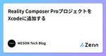

MESON Tech Blogさんのフィード
https://zenn.dev/meson
XR開発を行うMESONのテックブログです。XR開発を通じて得たノウハウを発信していきます。エンジニア絶賛募集中なのでXRに興味がある方はぜひご連絡ください！ メンバーページ・採用ページ → https://careers.meson.tokyo/
フィード

Reality Composer ProプロジェクトをXcodeに追加する 1
1
MESON Tech Blogさんのフィード
概要Apple Vision Pro向けアプリの開発にはReality Composer Proを利用してシーンを構築していくのが一般的です。一方、PolySpatialを用いてUnityで開発を行う場合、基本的なシーン構築についてはUnityが出力したコードおよびアセットですべてが管理されており、Reality Composer Proのアセットは含まれていません。しかし、PolySpatial 1.1.4からはSwiftUIとの連携機能が追加されるなど、Xcodeで行う開発フローを取り込むことが可能となりました。これを利用しようと思い、自分が開発しているUnityプロジェ...
5日前

Unity PolySpatial 1.1.4を使ってC#とSwiftUIを連携させる
MESON Tech Blogさんのフィード
概要PolySpatial 1.1.4が発表されました。アップデートの中で注目なのが、SwiftUIの連携部分が追加された点です。ただ、visionOSの仕組み上ちょっと癖のある実装となっています。今回は新しく追加されたSwiftUIと連携する方法について解説したいと思います。 SwiftUIはネイティブ実装いきなり、Unityで開発するんちゃうんかい、という話ですがSwiftUIを利用するにはSwiftによる実装を行わないとなりません。しかし、visionOSの特徴である磨りガラス風のUIを利用できることを考えると一考の余地はあるでしょう。Unityのオブジェクト...
22日前
visionOSで天井に空を描画する
MESON Tech Blogさんのフィード
概要今月はApple Vision Proの発売記念ということで1ヶ月記事チャレンジを行っています。この記事はその2/22の記事です！2/21の記事はこちら (Apple Vision Pro で変わる体験)MESONでは「SunnyTune」という天気を体感できるアプリを開発し、Apple Vision Proのローンチに合わせてリリースしています！https://prtimes.jp/main/html/rd/p/000000055.000032228.html今回はMR表現でよくある天井に空を描画する方法をVisionProでどうやって実装するかについて解説し...
1ヶ月前
Unity PolySpatialを使ってハンドトラッキングする
MESON Tech Blogさんのフィード
概要MESONではApple Vision Pro向けの開発を積極的に行っています！今月はApple Vision Proの発売記念ということで1ヶ月記事チャレンジを行っています。この記事はその2/19の記事です。2/18の記事はこちら（純粋くんと西田はかせ ⋆ 第一話 ⋆）ちなみにアプリ開発も行っていて、第一弾として「SunnyTune」という天気を体感できるアプリを開発し、Apple Vision Proのローンチに合わせてリリースしています！https://prtimes.jp/main/html/rd/p/000000055.000032228.html空間コ...
1ヶ月前
visionOSアプリで衝突検知を試す
MESON Tech Blogさんのフィード
概要MESONで実施中のApple Vision Pro 1ヶ月記事投稿チャレンジ の2/13の記事となります。2/12の記事 : VisionProを着けて歩いてみたら、フリーwifiのログイン画面にぶつかった。そして考えた未来の情報表示について。visionOSアプリで、3Dオブジェクトの衝突検知を試してみました。衝突検知とは、二つ以上のオブジェクトが互いにぶつかったかを検出するプロセスです。https://developer.apple.com/documentation/realitykit/collision-detection Collision Mode...
1ヶ月前
visionOSで描画順を制御する
MESON Tech Blogさんのフィード
概要半透明を描画する際に描画順が想定と違い、意図した描画にならないケースがあります。その際には 描画順を制御することが可能なのでその方法を解説します。 半透明の描画順問題半透明の描画を行う際にははじめに奥に描画されるものを描画してから手前に描画するものを描画して、後ろの描画結果に重ねることで表現しています。この時にカメラから遠いところから描画をするため、カメラの見る角度によって前後関係が変わってしまい、内側に存在するものが描画されずに見えなくなってしまいます。これを回避するために描画順を明示的に指定して、指定した順番で描画することで回避していきます。 描画順の指...
1ヶ月前
visionOSアプリで動画を再生する
MESON Tech Blogさんのフィード
概要visionOSアプリで、ウインドウ内での標準動画再生と360度動画再生を試してみました。 プロジェクトの作成visionOS向けにXcodeを利用して新規プロジェクトを作成します。!visionOS向けのAppテンプレートが用意されているので、それを選択します。!Immersive Spaceの選択は、ウインドウ表示再生、360度動画再生で適したものが異なります。ウインドウ表示再生の場合は、Mixedを選択します。360度動画再生のみの場合は、Fullを選択します。Mixed : コンテンツとパススルーを融合させる。人の周囲に仮想オブジェクトを配置...
2ヶ月前
visionOSに搭載されたAccessibility機能を試してみる
MESON Tech Blogさんのフィード
概要Vision Proの体験における大きなポイントの一つに、視線でのポインタ操作とハンドジェスチャー操作があります。Apple製品はアクセシビリティ機能が充実している印象ですが、Vision Proにおいても操作について多数の選択肢が用意されています。今回はポインタ操作とジェスチャー操作を中心に、用意されているアクセシビリティ機能を試してみます。 参照資料vision OSにおけるアクセシビリティ機能についてはこちらにまとめられています。Get started with accessibility features on Apple Vision Pro今回はこちら...
2ヶ月前
visionOSでモデルの骨を動かす
MESON Tech Blogさんのフィード
概要Xcode上で骨が入ったモデルを読み込んだ時に、読み込んだモデルの骨を操作する方法をまとめました。 モデルの読み込み骨を操作するためのモデルを読み込みます。今回はプロジェクト内に usdz モデルを配置し、読み込む方法で読み込んでいます。まずはModelsフォルダを追加しそこに動かす usdz を配置します。プロジェクトの Add File to ... から 追加したフォルダを選択します。この時 Added folders が Create groups に Add to targets が 対象のプロジェクト になっていることを確認してください。コピーさ...
2ヶ月前
Blenderで作成したUSDZアニメーションをvisionOSアプリで再生してみる
MESON Tech Blogさんのフィード
概要BlenderでUSDZがサポートされていると情報を見かけたこともあり、Blenderで作成したアニメーションを含むUSDZを、visionOSのアプリで動作させることを試してみました。https://wiki.blender.org/wiki/Reference/Release_Notes/3.5/Pipeline_Assets_IO 1. 【Blender】3Dアニメーション作成既存の作成されている3Dモデルを活用して、アニメーションはシンプルにキーフレームを打って作成します。よしなに簡単なアニメーションつけます。こんな感じです。 2. 【Blender】...
2ヶ月前
Unity PolySpatialを使ってApple Vision Pro向けアプリを開発する
MESON Tech Blogさんのフィード
概要いよいよApple Vision Pro、発売されましたね。MESONでは今後、Apple Vision Proの開発に力を入れていきます。第一弾として「SunnyTune」という、天気を体感できるアプリを開発し、Apple Vision Proのローンチに合わせてリリースしました！https://prtimes.jp/main/html/rd/p/000000055.000032228.html空間コンピューティング時代における新しい体験作りを今後もしていきたいと思っています！X（旧Twitter）のポストを見ても、Apple Vision Proは好意的に受け入...
2ヶ月前
MLX で Llama2 を動かしてみる
MESON Tech Blogさんのフィード
Appleシリコン上での実行に対応した機械学習ライブラリMLXが公開されました。今回は公式が公開している"mlx-examples"リポジトリの"llama"を使って、llama2-7b-chatの実行を試してみます。https://github.com/ml-explore/mlx-examples/tree/maincommit: 3cf436b529ea58d6c0c0a29c0dd799908cd4497d 2023/12/22!検証は12/22に実施しました。今後内容は変わる可能性があります。 検証環境MacBook ProApple M3 Proメモ...
3ヶ月前
Lightship ARDK 3.0 Beta 試してみた
MESON Tech Blogさんのフィード
概要AWE2023でLightship ARDK 3.0の発表があり、3.0 Beta版が触れるようになりました。久しぶりにLightshipのダッシュボードを訪れたところ、触れるようになっていたことを思い出したので、遅ればせながらインストールして試してみました。https://lightship.dev/blog/lightship-ardk-3-0/!Beta版で変更はまだあるかもしれないので、参考程度にしていただければと思います。 UnityプロジェクトLightship ARDKインストール手順ということで、UnityにLightship ARDKをイン...
6ヶ月前
Generative Agentのフロー解析
MESON Tech Blogさんのフィード
Generative Agentのソースコードが公開されてしばらく経ちましたね。Generative Agentの中では多くの回数LLMによる推論が行われていおり、それによりペルソナが意思を持ち社会性を担保しつつ生活できるようになっています。今回はコードを読み進めていく中でLLMがどのように・どのくらい使用されているか分かりやすように、どんな処理の流れになっているか整理を行いました。ペルソナがどのように個性を出して人間のような振る舞いを行なっているかの参考にしていただければ幸いです。!フローの青色の部分は ループ（繰り返し） することを表しており、フローの緑色の部分は LL...
6ヶ月前
visionOSでのハンドジェスチャ実装に関する調査
MESON Tech Blogさんのフィード
概要visionOS向けのアプリケーションでは、コントローラーが不要な仕様となっています。基本的な入力はLook & Tap、つまり視線と手を用いて行われるため、特にハンドトラッキングが重要となっています。今回はそんなvisionOS向けアプリでのハンドトラッキング、特にハンドジェスチャ認識の実装について調査した内容をまとめます。 ハンドジェスチャ実装の柔軟性についてAppleが言及していることWWDC23の動画であるDesign for spatial inputで、ハンドトラッキングについても触れられていました。https://developer.apple...
7ヶ月前
visionOS Reality Composer Pro でのShaderGraph
MESON Tech Blogさんのフィード
visionOSのReality Composer ProにはShaderGraphの機能が備わっておりノードベースでシェーダーを作成することができます。今回は公式の Explore materials in Reality Composer Pro の動画をもとにShaderGraphの使い方をまとめました。 導入今回の説明では Diorama のサンプルコードをもとに説明をしています。Diorama のサンプルコードはこちらからダウロードできるのでダウンロードしてください。Dioramaまた Xcodeのバージョンは Xcode15 bata6 で試しています。...
7ヶ月前
StabilityAIのJapanese StableLM Alpha 7BをGoogle Colabフリープランで試す
MESON Tech Blogさんのフィード
概要Stable DiffusionなどでおなじみのStabilityAIが、8/10に公開したブログにて新しいLLMであるJapanese StableLM Alphaを発表しました。https://ja.stability.ai/blog/japanese-stablelm-alphaブログから引用すると以下のように説明されています。Stability AI Japan は70億パラメータの日本語向け汎用言語モデル「Japanese StableLM Base Alpha 7B」及び、指示応答言語モデル「Japanese StableLM Instruct Alpha...
7ヶ月前
Oculus Interation SDKを使って、ノーコードで簡単にオリジナルのハンドジェスチャを実装する
MESON Tech Blogさんのフィード
Quest Pro向けアプリケーションの開発でハンドジェスチャ認識機能に触れる機会があり、思っていた以上に楽かつ柔軟に、ノーコードでカスタムできることに驚きました。SDK自体は1年以上前にでているので新しい内容ではないかもしれませんが、後学のために実装方法を残します！筆者紹介：おたりな と申します！ゲーム・XRの開発に興味があり、MESON, inc.にてエンジニアとしてインターンをさせていただいております。 Quest Proのハンドジェスチャ使用したものはOculus Interaction SDKで、Ray・Poke・Grab等のインタラクションを利用することができます...
7ヶ月前
Generative Agentのデモ実装をプレイしてみる
MESON Tech Blogさんのフィード
概要「Generative Agent」（Generative Agents: Interactive Simulacra of Human Behavior）とは、スタンフォード大学とGoogleの共同研究のエージェント論文です。この論文では25人のAIエージェントに人間のような振る舞いを実装し、小規模な社会でのシミュレーションを実現しています。今回紹介するデモ実装では、OpenAIなどのLLMを用いて人間らしい振る舞いをさせ、アニメーションを通して内容を確認することができます。以下にその論文があります。https://arxiv.org/abs/2304.03442自...
7ヶ月前
Unity Sentis入門 - PyTorchからONNXを自作して使うまで
MESON Tech Blogさんのフィード
概要Unityが発表したAIツール群。その中にあるSeintsは、Barracudaをリプレイスすることを目標に作られているもののようです。現在はまだβプログラムで、全員が利用できるわけではありませんが、運良く参加できたので早速試してみました。が、今回の内容はほぼBarracudaでも同じような内容になります。ONNXモデルを利用したフローを自分が理解したかったのでちょっとやってみた、という内容の記事ですｗhttps://unity.com/ja/ai今回は利用方法というより、全体の構造を把握、理解することを目的としています。Barracudaでもそうでしたが、Sentis...
8ヶ月前